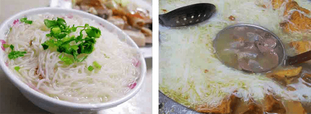
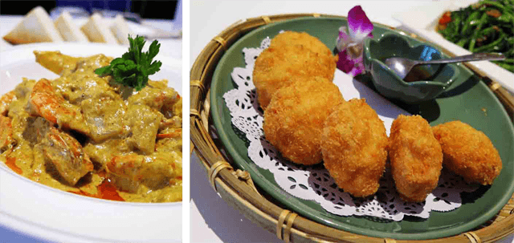
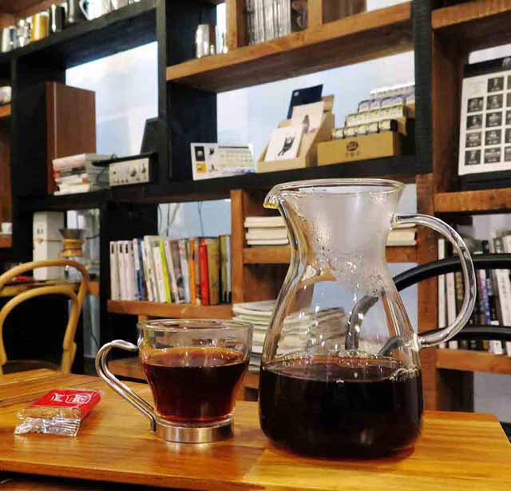
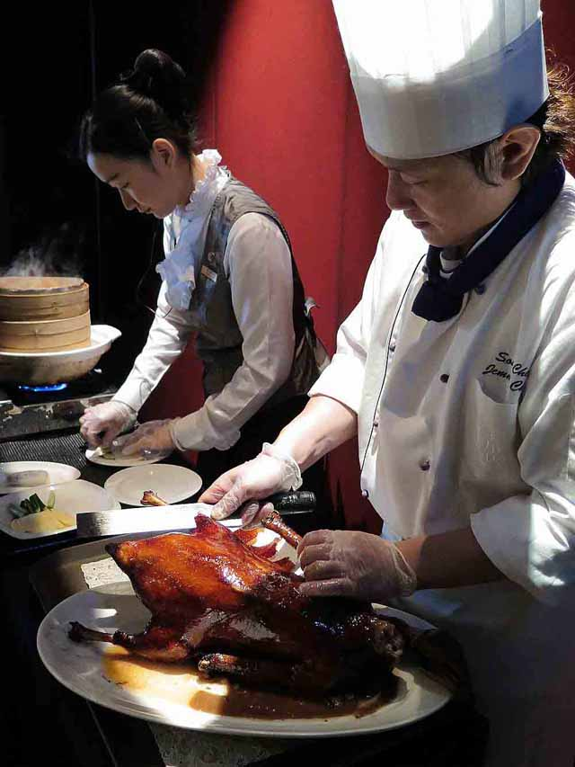

達人的旅遊新觀點

美食、旅遊、文創美學作家、專業演講者、中廣「全世界來作客」節目製作及主持人。為台灣曝光率最高及影響力最大的旅遊作家。行遍世界五大洲，共出版19本書。
我想，每個人都有自己在旅行上的喜好。沒有什麼對或錯，只有對不對味罷了，不是嗎？
在我的旅行路上，我特別喜歡從飲食的角度去認識在地的文化。因為，我深切的相信，都市的外貌可以輕易的變動，城市的風情也會隨著流行品味而有所更迭或同化，唯獨最不可取代的生活文化辨識度和印記，就是飲食了！
同樣的，每一回只要有外國或是外地訪客旅行台北，我都會說：「走，跟我吃一天，你就會知道台北是一個什麼樣的城市！」
我喜歡在天氣放晴的日子，一大早搭著捷運到「中正紀念堂」。在廣場上看著正在運動的人們，又或是正在訓練團隊活動的學生、軍人們，在他們肢體的舞動中，搭配著藍天下兩廳院頂上琉璃瓦反射的日照金光，深深的吸一口氣並道聲：「早安，台北！」
然後，穿過中正紀念堂，在隔2條街的「東門市場」，感受在地生活最真摯的活力。
我特別喜歡市場內的「羅媽媽米粉湯」。他們選用客家人喜愛的細米粉為主要食材，和一鍋各式豬肉內臟、豆腐等豐富的食材一起熬煮，而且精準的拿捏食材的互補性，讓米粉不軟爛，湯頭濃郁而不濁。此外，特有的客家香蔥油提味，讓這小小的一碗米粉湯，鮮香清甜又層次豐富外，還帶有客家媽媽的親切家鄉味。讓我這個離家的客家子弟，每每只要一碗米粉湯，灑上一些白胡椒粉，一入口，就擁有熟悉又安定的美好滋味，嘴角就會不由自主的輕輕上揚。
而搭上捷運往國父紀念館的方向行旅，你會發現，在2號出口處，有著一排排巷弄美食聚集，而且不單單是台灣在地美食齊聚，還有著一間間的時尚美食、異國料理等。每一個轉角，都讓人感受到台北的多元性、包容性和國際性都會風情，好不豐富啊！
在這裡，我特別喜歡280巷內的「香米」泰國餐廳。因為，來自緬甸的華僑老闆，把自己熟悉又喜愛的泰北美食帶入台北，由道地傳統泰國口味出發，再加上一些時尚的技法，呈現出都會風情的泰國味道，讓出版過泰國料理食譜書的我，也大大的折服不已！因此，每每只要一想念我喜愛的泰國滋味，又暫時無法到泰國旅行時，我就會到此一解我的相思之愁，和自己的味蕾來場美味的泰國之旅。
而沿著忠孝東路往回走，你會發現這裡的後巷內充滿了許許多多可愛的小店面。在這裡，你可以很清楚的感受到台北的年輕和活力，看見年輕人的創意、夢想和未來。
如果你不喜歡吵雜的人潮，又或是逛街累了，想找一個安靜又有質感的地方休憩一下，我會建議你不妨到「Single Origin espresso & roast」。你會發現，這家隱身在巷弄裡的咖啡店，不單單只是喝咖啡的地方，還是品味台北年輕夢想的最佳空間。
我喜歡他們的空間設計。這裡有些不按牌理的格局和延展性，讓我看見不屈服的毅力和韌性十足的生命力。當然，年輕老闆對咖啡的熱忱和夢想，在他沖泡咖啡的神情和專注力上，還有那咖啡拉花和一入口的細緻度上，通通展現無遺。彷彿讓人每一口所品嚐的滋味，不是一般的咖啡而已，而是一口口的年輕夢想和堅持啊！
至於晚餐，我喜歡位台北車站君品酒店17樓的「頤宮」。特別是在夕陽餘暉的浪漫陪伴下，一邊俯看台北美麗的街景，一邊享用最尊寵和無可取代的台菜上流味「辜家菜」。
我特別喜歡他們的「松露水果片皮鵝」。師傅會現場在桌邊幫肥美的烤鵝脫衣服，而且一片片脫的好薄好乾淨，一點肥脂都不留。然後，用手工餅皮將新鮮蘋果和香脆的烤鵝皮，以及鳳梨、醃漬梅、松露製成的水果醬包在一起。入口果香、烤鵝香及青脆帶微酸，口感多重又爽口，把中菜和台菜，還有在地食材、異國創意等，通通融合一起，呈現最高級的視覺和味覺藝術，讓人非常的驚艷及滿足啊！
當然，台北的味道，不僅僅是如此而已；台北的行旅，更有多重的面相和樂趣。相信我，從台北美食出發，在尋味的過程中，你會發現，台北何止是100種味道，它是一座人文氣息芬芳，又耐人尋味的美好城市。
information- 羅媽媽米粉湯：台北市中正區信義路二段81號(東門市場內)
- 香米泰國餐廳：台北市大安區光復南路280巷39號1樓
- Single Origin espresso & roast：台北市大安區敦化南路一段161巷76號
- 頤宮(君品酒店)：台北市大同區承德路一段3號17樓
美食、旅遊作家、中廣「全世界來作客」節目製作及主持人。文章被收編為高職餐飲及國中國文教科書課文，是台灣第一位受邀至總統府對談的旅遊作家、華人第一位榮獲泰國國際貢獻獎「第8屆泰國之友Friends of Thailand」個人獎殊榮的旅遊作家、台灣第一位受邀於韓國最大報「中央日報」發表美食文章的作家。行遍世界五大洲，共出版溫士凱的說走就走，泰國小旅行、日本關西私渡假、泰美味等19本書。